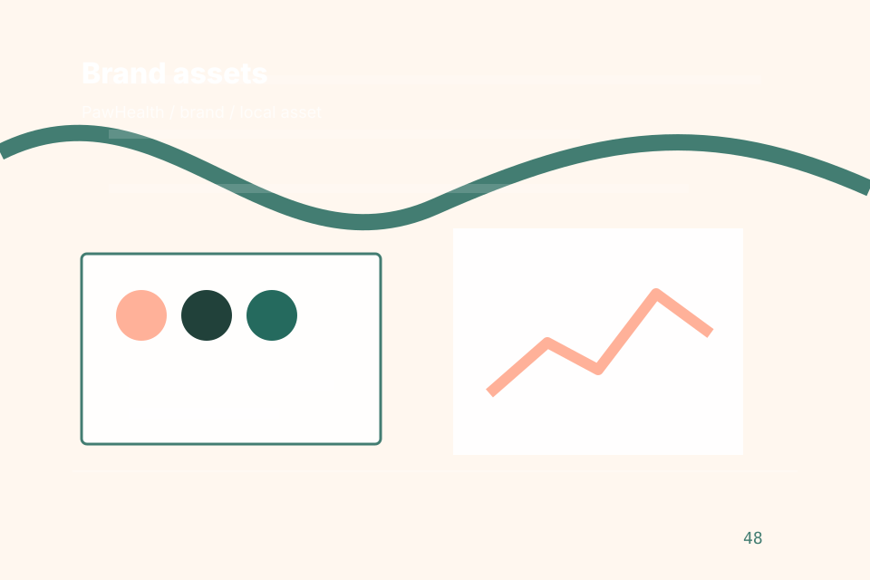

<!-- Static hand-authored header partial. -->
<a class="skip-link" href="#main">Skip to content</a>
<header class="site-header header-friendly-clinic-header" data-header data-header-type="Friendly clinic header" data-mobile-menu="Primary-reference mobile navigation">
  <div class="header-utility"><span>Care route</span><a href="../contact.html?route=appointment" data-track="header_care_route">Book Visit</a><a href="../contact.html?route=support" data-track="header_support_route">Need help</a></div>
  <div class="container nav-shell">
    <a class="brand" href="../index.html" aria-label="PawHealth home">
      
      <span><strong>PawHealth</strong><small>Veterinary care with warm clinic colours, rounded forms, and friendly triage</small></span>
    </a>
    <button class="menu-toggle" type="button" data-menu-toggle aria-expanded="false" aria-controls="site-menu">Menu</button>
    <nav class="site-nav mobile-menu-primary-reference-mobile-navigation" id="site-menu" aria-label="Main navigation">
      <a href="../index.html" aria-current="page">Home</a><a href="../clinic.html">Clinic</a><a href="../services.html">Services</a><a href="../care.html">Care</a><a href="../team.html">Team</a><a href="../contact.html">Contact</a></nav>
    <a class="nav-cta" href="../contact.html" data-track="header_cta">Book Visit</a>
  </div>
</header>
